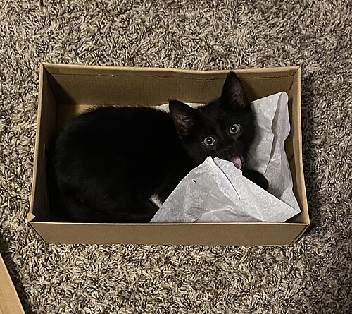

Маршрут: выйти в общую зону, забрать и вернуться
Маршрут опирается на официальный факт: электронные ячейки находятся на уровне вылета, в зоне регистрации (Turkish Airlines, FAQ по IST). Туристические гиды уточняют: у входов Gate 1 и Gate 6. Камера хранения с сотрудниками находится этажом ниже, на прилёте, напротив выхода 13.
Паспортный контроль руководитель проходит в любом случае (рейс внутренний), поэтому выход в общую зону не требует дополнительных документов.
Тайминг (оценка, не официальные данные)
Точка невозврата: если в ~14:45 руководитель ещё не у ячеек (например, очень длинная очередь на паспортном контроле), надёжнее сразу идти на досмотр и не рисковать рейсом. Ячейку тогда можно продлить или забрать позже.
Маршрут руководителя
-
От самолёта: не идти в «International Transfer»
Идти по указателям Pasaport kontrol → Arrivals / Varış, как обычный прилетающий пассажир, а не по трансферным. Если путаетесь, спросите сотрудника: «Arrivals passport control, please, I need to exit and come back for my domestic flight».
-
Паспортный контроль прилёта
Очередь Foreign passports / Diğer. Если спросят, куда летите дальше, покажите посадочный на TK2562 в Даламан.
-
Багажный зал: проходите мимо лент
Чемодан оформлен до Даламана (по единому билету багаж выдают в аэропорту назначения). Ничего не ждёте, проходите таможню по зелёному коридору.
-
Выход «International Arrivals» → зал встречающих
Вы в общей зоне. Ищите указатели Departures / Giden Yolcu и поднимайтесь на лифте или эскалаторе на уровень вылета.
-
Уровень вылета → вход (Entrance) 1 или 6 → ячейки
Ячейки стоят у входов в большой зал регистрации. Вход для внутренних рейсов на схеме отмечен красным, это дверь №2, рядом вход №1, поэтому начинайте с Entrance 1. Откройте ячейку по номеру и коду, которые прислал тот, кто оставил посылку.
-
Обратно: рамка на входе → досмотр «İç Hatlar / Domestic Departures»
На входе в терминал стоит досмотр (рамка и лента). Внутри идите к проходу İç Hatlar Giden Yolcu / Domestic Departures: досмотр, а паспортного контроля для внутреннего рейса нет. Регистрироваться заново не нужно, если есть посадочный на TK2562.
-
К гейту F1 / G → TK2562
Номер гейта есть на табло и в приложении Turkish Airlines. Крыло G длинное, закладывайте 10–15 минут пешком.
Для того, кто оставляет посылку
Уровень вылета (Departures / Giden Yolcu), зона регистрации
Ячейки стоят у входов Gate/Entrance 1 и 6. Ориентир: внутри, у входов в зал регистрации, в общей зоне до досмотра.
Терминал ячеек: следовать инструкции на экране
Выбрать размер, оплатить, положить пакет и закрыть. Срок: посылка лежит больше 24 часов (с 15-го до ~14:00 16-го), поэтому сразу оплатите двое суток или уточните на экране, как работает продление.
Сразу всё сохранить и отправить руководителю

Шаблон сообщения руководителю
Сколько стоит
Отдельных официальных цен на ячейки в общей зоне нет. Ориентир — опубликованный тариф камер хранения оператора аэропорта iGA (за 1 место, за 24 часа).
| Размер | В долларах | Оригинал |
|---|---|---|
| Small | $4,27 | ₺210 |
| Medium | $5,50 | ₺270 |
| Large | $11,20 | ₺550 |
| XL | $14,05 | ₺690 |
| XXL | $17,51 | ₺860 |
Курс ЦБ Турции (TCMB) на 08.10.2026: 1 $ = 49,1267 ₺ (покупка). Расчёт: ₺ ÷ 49,1267. Цены с НДС, с сайта igapass.com. Гид istanbul-ist-international-airport.com указывает, что тариф считается за каждые 24 часа и жёсткого максимума нет.
Чек-лист руководителю перед вылетом из Алматы
- На регистрации в Алматы попросить оба посадочных (TK353 и TK2562), чтобы в Стамбуле не идти на стойку.
- Проверить по бирке, что чемодан оформлен до DLM (Даламан).
- Сохранить офлайн номер ячейки, код и фото места.
- Установить приложение Turkish Airlines: там гейт и время посадки.
- Посылку везти в ручной клади: на досмотре её просветят, поэтому в ней не должно быть запрещённого (жидкости больше 100 мл, острые предметы).
- На всякий случай записать колл-центр аэропорта: 444 1 442 (+90 444 1 442).
Точка — координаты аэропорта из Википедии (41.26222, 28.72778); положение приблизительное, это не конкретный вход.
Источники
- Turkish Airlines: Transfer & transit passengers: пересадка «из-за рубежа на внутренний рейс», паспортный контроль, багаж выдают в аэропорту назначения.
- Turkish Airlines: Istanbul Airport FAQ: электронные ячейки на уровне вылета в зоне регистрации, камеры хранения на уровне прилёта.
- iGA Left Luggage: тарифы камер хранения (ориентир по ценам).
- istairport.com: колл-центр 444 1 442, 24/7.
- Неофициальный гид по IST: ячейки у Gates 1 и 6 на уровне вылета, камера хранения напротив Exit 13. Сторонний источник.
- Схемы терминала IST (Wikimedia Commons): схемы составлены пользователями Wikimedia, это не официальные планы аэропорта.
- TCMB: курс USD/TRY на 08.10.2026.
Что не удалось подтвердить
- Точное место ячеек (гиды называют Gate 1 и 6) и их отдельные цены: официальных данных нет.
- Тайминг — моя оценка, а не официальные нормы.